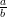

Teorema 16.  (A ⇒ B) e (A ⇒ C)
(A ⇒ B) e (A ⇒ C) ⇒ (A ⇒ (B e C)) é um argumento
válido.
⇒ (A ⇒ (B e C)) é um argumento
válido.
Definição 1. Uma proposição é uma sentença que pode assumir exatamente um de dois valores: VERDADEIRO (V) ou FALSO (F). O valor é chamado de VALOR-VERDADE da proposição.
Definição 2. Seja A uma proposição. A negação
de A é a proposição não(A) cujo valor-verdade é
| A | não(A) |
| V | F |
| F | V |
Definição 3. Sejam A e B proposições, então a disjunção
é a proposição A ou B cujo valor-verdade é
| A | B | A ou B |
| V | V | V |
| V | F | V |
| F | V | V |
| F | F | F |
| A | B | A e B |
| V | V | V |
| V | F | F |
| F | V | F |
| F | F | F |
Definição 4. Sejam A e B proposições. A condicional
é a proposição A ⇒ B cujo valor-verdade é
| A | B | A ⇒ B |
| V | V | V |
| V | F | F |
| F | V | V |
| F | F | V |
Definição 5. Sejam A e B proposições. A bicondicional
é a proposição A ⇔ B cujo valor-verdade é
| A | B | A ⇔ B |
| V | V | V |
| V | F | F |
| F | V | F |
| F | F | V |
Definição 6. Duas proposições A e B são logicamente equivalentes se assumem o mesmo valor-verdade. A notação é A ≡ B.
Obs A ≡ B é o mesmo que dizer que A ⇔ B é verdadeiro
Um argumento com premissas P1,P2,…,Pn e conclusão Q é válido quando
Q é verdadeiro sempre que P1 e P2 e e Pn é verdadeiro,
ou seja
|
| (16) |
Uma sentença aberta é uma sentença parametrizada por uma ou mais variáveis. Uma sentença aberta não tem valor lógico. O domínio da(s) variável(is) é chamado universo do discurso .
O conjunto verdade de uma sentença aberta P(x) sobre o universo U é o conjunto
|
| (17) |
ou seja, o conjunto formado pelos elementos de U que tornam P(x) verdadeira.
Quantificador Universal é a proposição
|
| (18) |
quando é veredadeiro significa que P(x) é verdadeiro para todos os valores de x no universo do discurso.
Quantificador Existencial é a proposição
|
| (19) |
quando é veredadeiro significa que P(x) é verdadeiro para algum valor de x no universo do discurso.
| proposição | verdadeira | falsa |
| para todo x, P(x) | P(x) = V para todo x no universo do discurso | existe um x no universo do discurso para o qual P(x) é falso |
| existe x, P(x) | existe um x no universo do discurso para o qual P(x) é verdadeiro | P(x) = F para todo x |
Podemos caracterizar os quantificadores com proposições a cerca do conjunto-verdade,
Com isso é fácil deduzir a negação das proposições quantificadas
Em proposições com mais de uma variável a ordem em que os quantificadores aparece é importante. Por exemplo, se x e y são inteiros
|
| (20) |
não é logicamente equivalente a
|
| (21) |
pois (20) é verdadeiro enquanto que (21) é falso. Entretanto, em alguns casos vale a equivalência. Por exemplo, se x e y são números naturais
|
| (22) |
é verdadeira, assim como
|
| (23) |
pois todo x ∈ ℕ divide o 0.
Se X ⊆ U ou para explicitar o universo, escrevemos para todo x ∈ X, P(x) que significa
|
| (24) |
Teorema 22. São argumento válidos:
Aula de exercícios
A e B agora denotam conjuntos.
x ∈ A denota a proposição x é elemento de A.
x ⁄∈ A denota a proposição não(x ∈ A).
∅ denota o conjunto vazio.
|A| denota a cardinalidade de A, isto é, o número de elementos quando A é finito.
Convenções Se n = 0
|
| (35) |
Se Ai = A para todo i
|
| (36) |
Definição 13. {A1,A2,…,An}é uma partição de A se
Demonstração. Seja C um conjunto. Vamos provar que ∅⊆ C é verdadeiro. Pela definição (25) ∅⊆ C é equivalente a para todo a, a ∈∅⇒ a ∈ C.
a ∈ ∅ é falso e pelo teorema 15 F ⇒ A é uma proposição verdadeira, então a ∈∅⇒ a ∈ C é sempre uma proposição verdadeira, portanto também é ∅⊆ C. ♦
Notação [a..b] = {z ∈ ℤ: a ≤ z ≤ b}.
Somatórios
Seja X ⊆ ℝ um conjunto finito. Denotamos por
|
| (37) |
a soma de todos os elementos de X. Como X é um conjunto finito os seus elementos podem ser enumerados
|
| (38) |
e também escrevemos
|
| (39) |
Teorema 26. Sejam c,a1,a2,…,an números reais e X um conjunto finito. Prove
Um tipo particular de soma será bastante utilizado mais tarde, a soma dos elementos de uma progressão aritmética e a soma dos elementos de uma progressão geométrica. Seja
A é uma progressão aritmética de razão r ∈ ℝ se
A é uma progressão geométrica de razão r ∈ ℝ se
|
| (40) |
para todo i ∈ [1..n - 1].
Demonstração. Seja A = {ai: i ∈ [0..n - 1]} uma progressão geométrica de
razão r≠1. Vamos provar que ∑
a∈Aa = a0 .
.
Da equação (40) temos que ai = a0ri portanto
e usando o item 3 do teorema 26
e essa soma é telescópica, portanto
fatorando o a0 no lado direito e dividindo tudo por r - 1 (o que podemos fazer pois r≠1), resulta em
♦
Um teorema é uma sentença que pode ser demonstrado ser verdadeira. Demonstramos que um teorema é verdadeiro exibindo uma sequência de proposições, que chamamos de prova de modo que em cada passo usamos um argumento válido para ter um conclusão verdadeira a partir de uma premissa verdadeira.
Vejamos algumas técnicas para construir provas de teoremas da forma A ⇒ B.
Prova direta. Pela definição de implicação A = V é o único caso que precisamos considerar para mostrar que a implicação A ⇒ B é verdadeira. Assumimos A verdadeiro e usamos argumentos válidos para concluir que B é verdadeiro, usualmente, com várias concicionais intermediarias e uma conclusão obtida por silogismo hipotético (veja a lista 1).
Por exemplo, se n é um número natural então a implicação
|
| (43) |
é verdadeira:
Pelo silogismo hipotético: se 3 divide n então 9 divide n2.
Como a variável n acima pode assumir qualquer valor natural, ou seja, n é um elemento genérico de ℕ, o que provamos de fato foi, pelo teorema 22 (generalização universal), que
Mais um exemplo:
Teorema A. Para todo n ∈ ℕ, se n é ímpar, então n2 é ímpar.
Demonstração. Seja n um número natural (/*com isso podemos usar generalização universal*/). Vamos provar que a implicação n ímpar ⇒ n2 ímpar é verdadeira.
Suponha que n é ímpar (/*se fosse par, a premissa da implicação seria falsa, portanto a implicação verdadeira*/). Se n é ímpar então n = 2k + 1 para algum k ∈ ℕ pela definição de número ímpar.
Se n = 2k + 1 então n2 = (2k + 1)2. Se (2k + 1)2 = 2(2k2 + 2k) + 1 então n2 = 2(2k2 + 2k) + 1, finalmente, se n2 = 2(2k2 + 2k) + 1 então n2 é ímpar. ♦
Prova indireta. Nesse tipo de prova, demonstramos que uma proposição logicamente equivalente a A ⇒ B é verdadeira.

é verdadeira e concluímos que A ⇒ B é verdadeira pela equivalência lógica
|
| (44) |
Por exemplo, a implicação
|
| (45) |
é verdadeira para todo número natural (tente uma prova direta).
Vamos provar a contrapositiva de (45)
No caso de provar que A ⇒ B por contradição, provamos que não(A ⇒ B) ⇒ F e verdadeiro, que equivale a A e não(B) ⇒ F ser uma proposição verdadeira.
O exercício 2 mostra algumas equivalências usadas nessa técnica.
Vamos provar por contradição:
Teorema B. Se a e b são números naturais coprimos, então não são ambos
par.
Demonstração. Vamos provar que
Sejam a e b números naturais, vamos provar que é verdade a proposição
 a par e b par
a par e b par é verdadeiro.
é verdadeiro.
Se mdc(a,b) = 1 e  a par e b par
a par e b par então
então  a par e b par
a par e b par .
.
Se (a par e b par) então mdc(a,b) ≥ 2. Se mdc(a,b) ≥ 2 então mdc(a,b)≠1 portanto, por silogismos hipotético
cuja conclusão é uma contradição, ou seja, mdc(a, b)≠1 é falso. ♦
Demonstração. Sejam d e e números naturais, vamos provar que é verdade a proposição
 d∕mdc(d,e),e∕mdc(d,e)
d∕mdc(d,e),e∕mdc(d,e) = k e k > 1 é
verdadeiro.
= k e k > 1 é
verdadeiro.
Se mdc d∕mdc(d,e),e∕mdc(d,e)
d∕mdc(d,e),e∕mdc(d,e) = k então k divide
d∕mdc(d,e) e k divide e∕mdc(d,e), portanto kmdc(d,e)
divide d e kmdc(d,e) divide e.
= k então k divide
d∕mdc(d,e) e k divide e∕mdc(d,e), portanto kmdc(d,e)
divide d e kmdc(d,e) divide e.
Se k > 1 então kmdc(d,e) > mdc(d,e), uma contradição. ♦
Vamos provar por contradição:
Teorema C.  é irracional.
é irracional.
Demonstração. Vamos provar que
por contradição, ou seja, vamos provar que
Suponha que  ∈ ℚ.
∈ ℚ.
Se  ∈ ℚ então, por definição de ℚ, existem naturais positivos d e e
tais que
∈ ℚ então, por definição de ℚ, existem naturais positivos d e e
tais que  = .
= .
Façamos
Se  =
=  então 2 = a2∕b2.
então 2 = a2∕b2.
Se 2 = a2∕b2 então a2 = 2b2.
Se a2 = 2b2 então a2 é par.
Se a2 é par então a é par, pelo teorema A acima.
Se a é par então existe k ∈ ℕ, a = 2k.
Se a = 2k então 2b2 = 4k2.
Se 2b2 = 4k2 então b2 = 2k2.
Se b2 = 2k2 então b2 é par.
Se b2 então b é par.
Se a é par e b é par, então mdc(a,b) ≥ 2, que é uma contradição. ♦
Exercício 2. Prove as equivalências lógicas, onde P,Q,R são proposições quaisquer.
Mais exemplos
Outra prova do teorema C . Seja x =  . Vamos provar que
. Vamos provar que
por contradição. De fato, provaremos que existem naturais positivos a e b tais que
|
| (46) |
|
| (47) |
e derivaremos daí uma contradição.
Vamos provar (46). Suponha que x ∈ ℚ. Então existem naturais positivos d e e
tais que x =  . Tomemos a = e b = , logo mdc(a,b) = 1.
. Tomemos a = e b = , logo mdc(a,b) = 1.
Agora, vamos provar (47). Se x =  então x2 = a2∕b2, ou seja, 2 = a2∕b2. Multiplicando ambos os lados por b2 temos 2b2 = a2, logo a2 é par. Se a2 é par então a é par, pelo teorema A acima. Se a é par então a = 2k e substituindo em 2b2 = a2 deduzimos 2b2 = 4k2, logo b2 = 2k2, ou seja b2 é par. Pelo mesmo argumento dado anteriormente, b é par. Portanto, mdc(a,b) ≥ 2.
Usamos o teorema 16 e a partir de (46) e (47) obtemos
|
| (48) |
e simplificando o lado direito (teorema 13)
|
| (49) |
finalmente, pelo silogismo hipotético (veja (16) na lista 1) de (48) e (49)
Outra prova do teorema B . Sejam a e b números naturais. Vamos provar que
Suponha a par e b par. Então 2 divide a e 2 divide b, por definição de par, portanto, mdc(a,b) ≥ 2, ou seja, não(mdc(a,b) = 1) é verdadeiro. ♦
Demonstrações de proposições quantificadas existencialmente: Para demonstrar uma proposição da forma existe x, P(x), usualmente, ou
Exemplos:
Teorema D. Existe um inteiro positivo que pode ser escrito como a soma de dois cubos de duas maneiras diferentes.
Prova construtiva. É suficiente verificar que 1729 = 103 + 93 = 123 + 13. ♦
Teorema E. Existem x, y irracionais tais que xy ∈ ℚ.
Prova não-construtiva. Vimos na aula anterior que  é irracional. Se
é irracional. Se  é racional então tomamos x = y =
é racional então tomamos x = y =  , senão tomamos x =
, senão tomamos x =  e y =
e temos xy =
e y =
e temos xy = 
 = 2 = 2 que é racional. ♦
= 2 = 2 que é racional. ♦
Teorema F. Existe uma partição {A,B} de ℤ com A e B infinitos.
Prova construtiva. Defina A = {2k: k ∈ ℤ} e B = {2k+1: k ∈ ℤ}. Nenhum desses conjuntos é finito (dê uma prova por contradição) e definem uma partição dos inteiros (prove). ♦
Teorema G. Se  ∈ ℚ então existe n ∈ ℤ, < n.
∈ ℚ então existe n ∈ ℤ, < n.
Prova construtiva. Se p = 0 então tomamos n = 1, senão tomamos
n = |p| + 1. No segundo caso  ≤|
≤| | < |p| + 1 pois |q|≥ 1. ♦
| < |p| + 1 pois |q|≥ 1. ♦
Teorema H. O poninômio p(x) = x3 + x - 1 tem exatamente uma raiz real.
Prova não-construtiva, precisa de cáculo 1. Pelo Teorema do Valor Intermediário para todo b ∈ [p(0),p(1)], existe a ∈ [0, 1] tal que p(a) = b.
Mas p(0) = -1 e p(1) = 1 então podemos tomar b = 0 e concluir que existe a ∈ [0, 1] tal que p(a) = 0.
Resta provar que a raiz é única. (Exercício. Dica: use o Teorema do Valor Médio e prove por contradição.) ♦
Aula de EXERCÍCIOS E DÚVIDAS
Prova
questão 1 - 10 pts Sejam a,b,c naturais. Dê uma prova direta para: se a divide b e a divide c então a divide b + c.
questão 2 - 10 pts Prove pela contrapositiva: se x ∈ B - A então x ⁄∈ A ∩ B.


questão 3 - 10 pts Prove por contradição: (A - B) ∩ B = ∅.
questão 4 - 10 pts Prove: Se A ∩ B = ∅ então ∅⊆ A.
questão 5 - 20 pts Leia com atenção o seguinte teorema e uma suposta demonstração.
Teorema Sejam a, b, c, d números naturais. Se c divide a e c divide b e d divide a e d divide b e c não divide d, então dc divide a e dc divide b._________________________________________________________________________
Demonstração. Se d divide a e b, então existem x e y tais que a = xd e b = yd.
Se c divide a então c divide xd.
Se c divide xd e não divide d, então c divide x.
Analogamente, se c divide b então c divide yd.
Se c divide yd e não divide d, então c divide y.
Se c divide x e y, então existem z e w tais que x = cz e y = cw.
Das conclusões acima temos a = xd = (cz)d = (dc)z e b = yd = (cw)d = (dc)w, portanto, dc divide a e dc divide b. ♦
Se c divide xd e não divide d, então c divide x.
Se c divide yd e não divide d, então c divide y.
No contraexemplo acima 6 divide 2 ⋅ 3 mas não divide 2 e não divide 3.
Um natural n pode dividir um produto de naturais pq mesmo que n não divida p e n não divida q.
questão 6 - 30 pts Determine uma fórmula em função de r e n, com r≠1, para
(Dica: use o truque da derivada explicado na lista. Pode usar que ∑ i=0nri = .)
Podemos olhar para as duas expressões em cada lado da igualdade acima como uma função em r e derivá-las com respeito a r. No lado esquerdo temos
|
| (50) |
e no lado direito
 g(r), ou seja,
g(r), ou seja,
|
| (51) |
questão 7 - 30 pts Provamos em aula que o polinômio p(x) = x3 + x- 1 tem uma raiz real usando o Teorema do Valor Intermediário. Agora, usando contradição e o Teorema do Valor Médio prove que essa raiz é única.
mas p(r2) - p(r1) = 0, portanto p′(c) = 0 que é uma contradição pois o p′(x) = 3x2 + 1 > 0 qualquer que seja x.
Teorema do Valor Médio. Se f é contínua em [a,b] e derivável em (a,b) então existe c ∈ (a,b) tal que
correção da prova
A prova de invariantes ficará pra depois de indução.
Um programa está correto se a saída está correta para toda entrada. A prova da correção do programa tem duas partes: provar que a resposta está correta se o programa terminar ( correção parcial ), provar que o programa termina.
A seguir, p e q são proposições.
Definição 14. Um programa, ou trecho de programa, S está parcialmente correto com respeito a pré-condição p e a pós-condição q se sempre que p for verdadeiro para os valores de entrada de S e S terminar, então q é verdadeiro para os valores de saída de S.
Notação p{S}q significa S está parcialmente correto com respeito a pré-condição p e a pós-condição q.
Exemplo Por exemplo, se p é x = 1 e q é z = 3 e S é o trecho de programa
então, p{S}q. De fato, suponha p. Após a execução de S, y = 2 e z = 1 + 2 pois de p temos x = 1. Portanto, z = 3.
Argumentos válidos para correção parcial de programas:
1. Composição
2. Condicional
2.1. No caso
o argumento é
2.2. No caso
o argumento é
3. Laços
No caso
o argumento é
A proposição (p e condição){S}p é o invariante do laço que por enquanto vamos assumir que é dado e é verdadeiro. Provar que uma proposição é invariante de laço precisa de indução, que veremos mais tarde.
Exemplo. Seja S o programa
Sejam p: m ∈ ℤ e n ∈ ℤ e q: p e a = |n| as proposições dadas no algoritmo, seja R o trecho de programa
Vamos provar
|
| (52) |
Assuma m ∈ ℤ e n ∈ ℤ.
Se m ∈ ℤ e n ∈ ℤ e n < 0 então após R terminar temos a = -n. Se n < 0 então |n| = -n portanto a = |n|, portanto
|
| (53) |
Agora, se m ∈ ℤ e n ∈ ℤ e não(n < 0) então após R terminar temos a = n. Se não(n < 0) então |n| = n portanto a = |n|. Portanto,
|
| (54) |
Portanto, de (53), (54) e do argumento 2.2 temos (52), e, portanto, p{R}q.
Agora, considere o trecho
e vamos provar (p e a = |n|){T}(q e k = 0 e x = 0).
Se V então após {k:=0;x:=0} vale k = 0 e x = 0, portanto
|
| (55) |
para qualquer proposição verdadeira q, em particular quando
é verdadeira.
Assuma r: q e k = 0 e x = 0. Se k < a (a condição do laço) então o invariante
é verdadeiro antes da primeira rodada do laço pois 0 = m0 e 0 ≤|n|. Assuma
antes de uma execução do trecho
Considere uma execução de U e denote por x′ e k′ os valores das variáveis x e k antes dessa execução. Então, por hipótese

e (condição) k′ < a; após a execução de U teremos x = x′ + m e k = k′ + 1.
Se x = x′ + m e x′ = mk′, então x = (mk′) + m = m(k′ + 1).
Se k = k′ + 1 x = m(k′ + 1) então x = mk.
Se k′ < a então k′ + 1 ≤ a.
Portanto, após a execução de U o invariante é verdadeiro, ou seja, “provamos”
e do argumento para laços, temos
ainda, (não(k < a) e x = mk e k ≤ a) ≡ (x = ma). Portanto,
logo r{enquanto (k<a) U}s, onde s: x = ma e a = |n|.
Finalmente, assuma s, denote por Q o trecho de programa
Se s, então x = m|n|.
Se x = m|n| e n < 0 então após Q, produto = -x.
Se produto = -x e x = m|n| e n < 0 então produto = -m|n| = -m(-n) = mn.
Portanto t.
Agora, se x = ma e a = |n|, então x = m|n|.
Se x = m|n| e não(n < 0) então após Q, produto = x.
Se produto = x e x = m|n| e não(n < 0) então produto = m|n| = mn. Portanto,
pelo argumento 2.2 para condicionais
Resumindo, provamos
De 1 e 2 temos
|
| (56) |
pela regra da composição. De 3 e 4 temos, por composição novamente
Um dos axiomas de Peano para os números naturais diz que para X ⊆ ℕ
|
| (57) |
Com isso temos o seguintes argumentos válidos: seja P(n) uma sentença aberta.
Provaremos:
Demonstração. Para
se P(a) então 0 ∈ X. Seja n ≥ a e defina m = n - a. Se P(n) ⇒ P(n + 1) então m ∈ X ⇒ m + 1 ∈ X. Por (57) X = ℕ, portanto, P(n) para todo n ≥ a. ♦
Indução matemática é uma técnica de prova para proposições da forma
para todo n ≥ a, P(n). Numa prova por indução provamos P(a) que é dito a
base da indução, e provamos para todo n ≥ a,  P(n) ⇒ P(n + 1)
P(n) ⇒ P(n + 1) que é dito o
passo da indução.
que é dito o
passo da indução.
Exemplo Para todo n ∈ ℕ, ∑ i=0ni = n(n + 1)∕2.
Exemplo Para todo n ≥ 5, 2n > n2.
A base é importante, sem ela poderíamos pensar que sabemos provar
n(n + 1) é ímpar para todo n ≥ 1
que obviamente não vale, pois conseguimos provar a implicação do passo da indução para essa sentença. Vamos provar que
para todo n ≥ 1, n(n + 1) ímpar ⇒ (n + 1)(n + 2) ímpar.
Seja n > 1 um natural e suponha que n(n + 1) é ímpar. Então
A passo é importante, uma prova descuidada pode por tudo a perder. Por exemplo, seja P(t) a sentença
Se max{a,b} = 0 então a = b = 0, portanto a base é verdadeira.
Seja t ∈ ℕ, suponha que
e vamos provar que para todo a, para todo b, (max{a,b} = t ⇒ a = b). Se max{a,b} = t então max{a - 1,b - 1} = t - 1, portanto pela hipótese acima a - 1 = b - 1, logo a = b.
Claramente, P(t) é falso (determine um contraexemplo). O problema com o passo é que P(0) ⁄⇒ P(1) quando a ou b vale 0.
Exemplo. Todo natural n ≥ 2 pode ser escrito como produto de primos.
Numa tentativa de prova usando o teorema 30 temos:
-a base é fácil, n = 2 é primo;
-no passo temos que provar que se n é produto de primos então n + 1 é produto
de primos. Se n + 1 é primo a implicação é verdadeira (vacuidade), se n + 1 é
composto então, por definição de número composto n + 1 = ab onde 1 ≤ a,b ≤ n
são números naturais.
Se soubéssemos que a e b são produtos de primos então n + 1 seria produto de primos, mas só o que sabemos é que n é produto de primos.
Ou seja, para todo n ≥ a, P(n) é verdadeiro sempre que P(a) é verdadeiro e para todo n ≥ a é verdadeiro que
Demonstração. Exercício. ♦
Exemplo. Todo natural n ≥ 2 é primo ou pode ser escrito como produto de primos.
Exemplo. Todo inteiro n ≥ 7 poder ser escrito como múltiplo de 2 mais múltiplo de 5.
Vamos provar P(n) por indução.
P(0) é verdadeiro. Seja n um natural arbitrário e vamos provar
que para todo n, P(0) e P(1) e  e P(n) ⇒ P(n + 1).
Suponhamos P(0) e P(1) e
e P(n) ⇒ P(n + 1).
Suponhamos P(0) e P(1) e  e P(n). Então
e P(n). Então
Boa-Ordenação
Seja A ⊂ ℝ. O menor elemento de A, quando existe, é o elemento m ∈ A tal que para todo a ∈ A, m ≤ a.
Notação. min A denota o menor elemento de A, se ele existe.
Exemplo. A = (0, 1) ⊂ ℝ não tem menor elemento. (prove)
Exemplo. A = [0, 1) ⊂ ℝ tem menor elemento, min A = 0. (prove)
Demonstração. Se para todo x ∈ [0..n], x ⁄∈ A e existe x ∈ [0..n + 1], x ∈ A então n + 1 ∈ A.
Agora, precisamos provar que para todo a ∈ A, n + 1 ≤ a.
Por contradição. Suponha que não(para todo a ∈ A, n+1 ≤ a), ou seja,

Seja c ∈ A tal que c < n + 1 (instanciação existencial, teorema 22). Se c < n + 1 então c ∈ [0..n] portanto c ⁄∈ A, portanto
essa última proposição é uma contradição. ♦
Demonstração. Seja A um subconjunto não-vazio dos naturais. Vamos provar que A tem menor elemento em dois casos: 0 ∈ A e 0 ⁄∈ A.
No caso 0 ∈ A, o 0 é o menor elemento de A.
Assumimos que 0 ⁄∈ A e definimos
0 ∈ X, pois se 0 ⁄∈ A então 0 ∈ ℕ - A, logo {0} ⊂ ℕ - A. Notemos que {0} = [0..0].
Se A≠∅ então X≠ℕ.
Se 0 ∈ X e X≠ℕ então pela a contrapositiva do axioma de Peano (57)
concluímos que

Seja m tal que m ∈ X e m + 1 ⁄∈ X.
Agora, usando a definição de X,
se m ∈ X então [0..m] ⊂ ℕ - A.
[0..m] ⊂ ℕ - A ≡ para todo x ∈ [0..m], x ⁄∈ A;
se m + 1 ⁄∈ X então [0..m + 1] ⁄⊂ ℕ - A;
[0..m + 1] ⁄⊂ ℕ - A ≡ existe y ∈ [0..m + 1], y ∈ A;
portanto
e pelo teorema 32, m + 1 é o menor elemento de A. ♦
Exemplo. para todo inteiro n ≥ 5, existem naturais a e b tais que n = 2a + 5b.
Demonstração. Vamos provar por contradição. Suponha que a afirmação seja falsa e seja A o conjunto de todos os naturais maiores ou iguais a 5 que não podem ser escritos na forma 2a + 5b. Como A≠∅ podemos tomar m o menor elemento de A. De m ∈ A temos m ≥ 5, portanto m - 1 ≥ 4. Da minimalidade de m temos que m - 1 = 2a + 5b.
Se a ≤ 1 e b ≤ 0 então m - 1 = 2a + 5b ≤ 2 + 0 = 2, portanto, a > 1 ou b > 0.
Se a > 1 então m = 2a + 5b + 1 = 2(a - 2) + 5(b + 1).
Se b > 0 então m = 2a + 5b + 1 = 2(a + 3) + 5(b - 1).
Em ambos os casos, temos uma contradição. ♦
Observação importante : os teoremas 29, 30, 31 e 33 são equivalentes. Prove esse fato.
Invariante de laço.
Consideremos o seguinte algoritmo:
Vamos provar que a seguinte proposição é um invariante do laço na terceira linha do algoritmo
|
| (58) |
Antes, porém, notemos que o invariante e a negação da condição do laço resulta que quando o laço termina temos i ≥ 1 e i ≤ n e f = i! e não(i < n), ou seja, i = n e f = n!, provando a correção parcial do algoritmo.
Vamos provar que a proposição (58) é verdadeira independente do número de vezes que o laço é executado. A prova é por indução no número de iterações do enquanto.
Suponhamos que a condição do laço vale, ou seja, i < n. Antes da primeira iteração (58) é verdadeiro pois i = f = 1! = 1.
Suponhamos que i < n e que i ≥ 1 e i ≤ n e f = i!. Após a execução de { f := f*(i+1); e após a execução de { i := i+1;} temos que para o novo valor de i, i ≥ 1 e i ≤ n e f = i!.
Voltemos ao exemplo da aula 12.
Suponha que a condição do laço, k < a, é verdadeira. Antes da primeira iteração o invariante é verdadeiro.
Suponha que a condição do laço, k < a, é verdadeira e que vale o invariante. Considere uma execução de { x:=x+m; k:=k+1; } e denote por x′ e k′ os valores das variáveis x e k antes dessa execução. Então, por hipótese
e (condição) k′ < a; após a execução temos x = x′ + m e k = k′ + 1.
Se x = x′ + m e x′ = mk′, então x = (mk′) + m = m(k′ + 1).
Se k = k′ + 1 x = m(k′ + 1) então x = mk.
Se k′ < a então k′ + 1 ≤ a.
Portanto, após a execução o invariante é verdadeiro
Algoritmos recursivos.
Exemplo 1.
A prova da correção é fácil usando indução.
Demonstração. Vamos provar que fat(n) = n! usando indução em n ∈ ℕ. Se n = 0 então o algoritmo devolve 1 na linha 1, ou seja, então fat(n) = 1
Seja n ∈ ℕ. Assuma que fat(n) = n! e vamos provar que fat(n + 1) = (n + 1)!. Como n + 1 ≥ 1, pelo algoritmo fat(n + 1) = (n + 1)*fat(n) e por hipótese fat(n) = n!, portanto, fat(n + 1) = (n + 1) * n! = (n + 1)!. Pelo teorema 29 temos fat(n) = n! para todo n ∈ ℕ. ♦
Exemplo 2.
Demonstração. Se n = 0 então o algoritmo devolve 1, ou seja pot(a,n) = 1 = an.
Seja n ∈ ℕ um natural arbitrário e suponha que pot(a,n) = an. Então n + 1 ≥ 1 portanto, pelo algoritmo, pot(n + 1) = a*pot(a,n) = a * an = an+1. ♦
semana academica
aula de exercícios
Duas resoluções propostas pelo Leandro.
Exercício 18. Prove que o seguinte programa está parcialmente correto.
Demonstração. Sejam R o trecho de programa definido pelas linhas 1 e 2, S o trecho de programa definido pelas linhas 3 – 5, T todo o programa, e p e t as proposições:
|
| (59) |
Portanto,
Assumindo
como invariante do laço de S, temos, já que (r ⁄≥ d) é a condição de parada do laço, que
Logo,
e, dessarte, p{T}t.
Resta-nos ainda mostrar u serve como invariante do laço definido por S. Como r ≥ 0 e a = dq + r se r = a e q = 0, temos, da asserção 59, que p{R}u. Analisemos agora o que acontece quando executamos {r := r-d; q := q + 1} assumindo as linhas 4 e 5: sendo r′ e q′ os novos valores de, respectivamente, r e q, verificamos que q′ = q + 1 e r′ = r - d. Consequentemente, já que r ≥ d, r′≥ 0,
e, finalmente,
o que prova que u é de fato um invariante para o laço definido por S. ♦
Antes do próximo exercício, vamos provar que: Para quaisquer naturais não nulos a e b,
|
| (60) |
Demonstração. Como a e b são diferentes de 0,
Logo,
Exercício 6.h Prove usando indução que para todo n ≥ 0, ∑ j=0n = 2n.
Demonstração. Sabemos que
Seja k um número natural qualquer. Por indução, suponhamos então que, para todo t ∈ [1..k], valha que
Como, de (60),
e, como
temos, da hipótese da indução, que
como queríamos mostrar. ♦
Funções
denota uma relação f ⊆ A×B que associada a todo a ∈ A um único b ∈ B, esse denotado por f(a), ou seja, b = f(a).
A é o domínio da função, B é o contradomínio da função, b é a imagem de a por f. A imagem de f é o conjunto

Definição 15. Sejam f : A → B uma fução com A ⊆ ℝ, B ⊆ ℝ, e X ⊆ A. Então

Funções chão e teto
Função teto ⌈⌉: ℝ → ℤ dada por
Função chão ⌊⌋: ℝ → ℤ dada por
Teorema 34. Sejam x ∈ ℝ e t ∈ ℤ.
⌈⌉: ℝ → ℤ satisfaz
Demonstração.
Por outro lado, ⌈x⌉∈{z ∈ ℤ: z ≥ x} por definição de menor elemento (aula 15), portanto
|
| (61) |
donde concluímos que ⌈x⌉ = x.
Agora, suponhamos t-1 < x e x ≤ t. Então, x ≤ t e ⌈x⌉ = min{z ∈ ℤ: z ≥ x} implica em ⌈x⌉≤ t, e de t- 1 < x e (61) temos t- 1 ≤⌈x⌉, ou seja, t ≤⌈x⌉ pois t,⌈x⌉∈ ℤ.
Agora, suponhamos que x ≤ t e t < x + 1. De t < x + 1 e x + 1 ≤⌈x⌉ + 1 temos t ≤⌈x⌉. Por outro lado, se x ≤ t então t ∈{z ∈ ℤ: z ≥ x}, portanto t ≥⌈x⌉, logo t = ⌈x⌉.
Se x < y e y ≤⌈y⌉ então x ≤⌈y⌉, portanto ⌈y⌉∈{z ∈ ℤ: z ≥ x}, portanto, ⌈x⌉≤⌈y⌉.

portanto
e pelo item 3, novamente,
Demonstração. Seja f : ℝ → ℝ contínua, crescente e tal que f(x) ∈ ℤ ⇒
x ∈ ℤ, vamos provar que  f(⌈x⌉) = ⌈f(x)⌉ em dois casos. Sabemos por
(61) que x ≤⌈x⌉.
f(⌈x⌉) = ⌈f(x)⌉ em dois casos. Sabemos por
(61) que x ≤⌈x⌉.
Se x = ⌈x⌉ então f(⌈x⌉) = ⌈f(x)⌉. Resta provar o caso x < ⌈x⌉.
= ⌈f(x)⌉. Resta provar o caso x < ⌈x⌉.
Seja x um real tal que x < ⌈x⌉. Se f é crescente, então f(x) < f⌈x⌉ .
Tomemos o intervalo [f(x),f
.
Tomemos o intervalo [f(x),f ⌈x⌉
⌈x⌉ ]. Como f é contínua, para todo y ∈
[f(x),f
]. Como f é contínua, para todo y ∈
[f(x),f ⌈x⌉
⌈x⌉ ] existe a ∈ [x,⌈x⌉] tal que f(a) = y.
] existe a ∈ [x,⌈x⌉] tal que f(a) = y.
Se f(x) < f ⌈x⌉
⌈x⌉ então ⌈f(x)⌉≤⌈f
então ⌈f(x)⌉≤⌈f ⌈x⌉
⌈x⌉ ⌉ pelo item 4 do teorema 34.
⌉ pelo item 4 do teorema 34.
Suponhamos que ⌈f(x)⌉ < ⌈f ⌈x⌉
⌈x⌉ ⌉. Se ⌈f(x)⌉ > f
⌉. Se ⌈f(x)⌉ > f ⌈x⌉
⌈x⌉ então ⌈f(x)⌉
é um inteiro entre f(⌈x⌉) e ⌈f(⌈x⌉)⌉.
então ⌈f(x)⌉
é um inteiro entre f(⌈x⌉) e ⌈f(⌈x⌉)⌉.
Então ⌈f(x)⌉ ∈ f(x),f ⌈x⌉
⌈x⌉
 , portanto, existe a ∈ [x,⌈x⌉) tal que
f(a) = ⌈f(x)⌉. Logo f(a) ∈ ℤ e, por hipótese, a ∈ ℤ, portanto a ⁄∈ [x,⌈x⌉),
uma contradição.
, portanto, existe a ∈ [x,⌈x⌉) tal que
f(a) = ⌈f(x)⌉. Logo f(a) ∈ ℤ e, por hipótese, a ∈ ℤ, portanto a ⁄∈ [x,⌈x⌉),
uma contradição.
Com isso temos ⌈f(x)⌉≤⌈f ⌈x⌉
⌈x⌉ ⌉ e não(⌈f(x)⌉ < ⌈f
⌉ e não(⌈f(x)⌉ < ⌈f ⌈x⌉
⌈x⌉ ⌉), ou seja,
⌈f(x)⌉ = ⌈f
⌉), ou seja,
⌈f(x)⌉ = ⌈f ⌈x⌉⌉. ♦
⌈x⌉⌉. ♦
Exemplo.
A função definida nos reais f(x) = , com k ∈ ℤ é contínua (pois é uma função
linear) crescente e tal que f(x) ∈ ℤ ⇒ x ∈ ℤ (pois f(x) = t implica x = kt),
portanto
Exercício. Prove que
Teorema 36. Sejam x ∈ ℝ e t ∈ ℤ.
⌊⌋: ℝ → ℤ satisfaz

então
Exemplo.
A função definida nos reais f(x) = , com k ∈ ℤ é contínua (pois é uma função
linear) crescente e tal que f(x) ∈ ℤ ⇒ x ∈ ℤ (pois f(x) = t implica x = kt),
portanto
Demonstração. Seja x ∈ ℝ e vamos provar que ⌊-x⌋ = -⌈x⌉. Sabemos do teorema 34 item 3 que
portanto
e do teorema 36 item 3 temos que
A prova de ⌈-x⌉ = -⌊x⌋é exercício. ♦
Definição indutiva . Seja n0 ∈ ℕ e A = {n ∈ ℕ: n ≥ n0}. Podemos definir uma função com domínio A usando indução da seguinte maneira:
Se X ⊆ A é o conjunto dos pontos para os quais f está definida então pelo Princípio da Indução, teorema 31, X = A.
Exemplos
Notemos que nos exemplos acima a função F é F(n) = n!, a função S é S(n) = ∑ i=1ng(i) e a função p é a função p(n) = an. O que podemos dizer a respeito das outras funções? Vamos provar que f(n) = 3(2n+1 - 1) e que b(n) = ⌊log 2(n)⌋ + 1.
Seja g: ℕ → ℕ definida por g(n) = 3(2n+1 - 1). Vamos provar por indução que para f definida indutivamente no exemplo 1 acima vale para todo n, f(n) = g(n).
Se n = 0 então f(0) = 3 e g(0) = 3(2 - 1) = 3, portanto f(0) = g(0).
Agora, vamos provar que para todo n ∈ ℕ, se f(n) = g(n) então f(n + 1) = g(n + 1). Seja n um natural e assuma que f(n) = g(n). Então
Portanto, pelo teorema 29 para todo n, f(n) = g(n).
No caso do exemplo 5, seja ℓ: ℕ → ℕ definida por ℓ(n) = ⌊log 2(n)⌋ + 1. Vamos provar por indução que para b definida indutivamente no exemplo acima vale para todo n, b(n) = ℓ(n).
Se n = 1 então b(1) = 1 e ℓ(1) = ⌊log 2(1)⌋ + 1 = 1, portanto b(1) = ℓ(1).
Agora, vamos provar que para todo n ∈ ℕ, se para todo k ∈ [1..n], b(k) = ℓ(k) então b(n+1) = ℓ(n+1). Seja n um natural e assuma que para todo k ∈ [1..n], b(k) = ℓ(k). Então

Portanto, pelo teorema 29 para todo n ≥ 1, b(n) = ℓ(n).
Agora, o que podemos dizer da função H do exemplo 6? Podemos dizer muita coisa, menos uma fórmula aritmética simples para computar H(n), que é conhecido como n-ésimo número harmônico.
Relembrando dois conceitos do cálculo: seja f : ℕ → ℝ
lim n→∞f(n) = 0 se e somente se
lim n→∞f(n) = ∞ se e somente se
Exercício. Suponha f(x) > 0 para todo n ∈ ℕ. Prove que se lim n→∞f(n) = 0 então lim n→∞ = ∞.
Nessa aula f e g são funções de ℕ em ℝ.
Exemplos.
(1) 1 ≪ log(log(n)).
(2) log(log(n)) ≪ log(n).
(3) log(log(n)) ≪ log(n).
(4) log(n) ≪ nε para todo ε > 0.
(5) nε ≪ nc para quaisquer 0 < ε < 1 ≤ c.
(6) nc ≪ nlog n para todo 1 ≤ c.
(7) nlog n ≪ exp(n).
(8) exp(n) ≪ nn.
(9) nn ≪ exp(exp(n)).

se existe n0 ≥ 0 e existe c > 0 tais que
e nesse caso dizemos que g é um limitante superior assintótico para f.
Exemplos
(1) n2 + 2n + 1 = O(n2).
(2) 5 sin(n) = O(1)
Atenção o símbolo de = na definição não é a igualdade no sentido usual. Notemos que
Observação. A recíproca não vale.
Exemplos.
(3) an2 + bn + c = O(n2).
De
temos bn + c ≪ n2 e pelo teorema 38, bn + c = O(n2). Certamente, an2 = O(n2). Portanto, pelo teorema 40 an2 + bn + c = O(n2).
De uma maneira geral podemos provar que
(4) para k ∈ ℕ constante, ∑
i=0ka
ini = O(nk).
De fato, ∑ i=0ka ini = a knk + ∑ i=0k-1a ini e para o somatório temos
pois k -i > 0. Portanto, ∑ i=0k-1a ini ≪ nk e pelo teorema 38 ∑ i=0k-1a ini = O(nk). Como aknK = O(nk), pelo teorema 40 a knk + ∑ i=0k-1a ini = O(nk)
Exemplos.
(5) n log(n!) = O(n2 log n).
Primeiro, temos n = O(n). Depois, n! = ∏
i = 1ni < ∏i = 1nn = nn. Como log é
crescente log(n!) < log(nn) = n log(n), portanto log(n!) = O(n log(n)). Pelo
teorema 42, n log(n!) = O(n2 log n).
(6) para todo a > 0, log a(n) = O(log 2(n)).
De fato,

porém = O(1) e log 2n = O(log 2n) e pelo teorema 42, log a(n) = O(log 2(n)).
Não é verdade
Convenções.
Exemplos.
(7) log 2 = Θ(log 2(n)).
em que a igualdade segue do teorema 35 e a última desigualdade do teorema 34, item 3. Logo log 2⌈n⌉ = O(log 2n). Agora,
para todo n ≥ 4, portanto log 2n = Ω(log 2(⌈n⌉)). Pelo teorema 44 log 2⌈n⌉ = Θ(log 2(n)).
(8) = Θ(log n).
(9) se ak≠0 então ∑
i=0ka
ini = Θ(nk).
Vimos que ∑
i=0ka
ini = O(nk). Vamos provar que ∑
i=0ka
ini = Ω(nk).
porém
ainda
portanto
Notação assintótica em equações
expressão 1 = expressão 2
onde expressão são expressões algébricas que envolvem notação assintótica.
Nesses casos, os termos assintóticos em expressão 1 são quantificados universalmente, enquanto que os termos assintóticos em expressão 2 são quantificados existencialmente.
Exemplos.
(1) n3 + O(n2) = O(n3) + n2 + n entende-se como
para todo n.
Dado f(n) = O(n2), tome g(n) = n3 + f(n) - n2 - n, então g(n) = O(n3) e n3 + f(n) = g(n) + n2 + n.
(2) O número de comparações do Merge-Sort pode ser escrito como
|
| (62) |
que significa que existe f(n) = Θ(n) tal que T(n) = T + T + f(n), para todo n. É sabido que T(n) = Θ(n log n).
Veremos técnicas para solução assintótica de recorrências. Quando
procuramos por soluções assintóticas não há motivo para especificar
exatamente as condições iniciais, no caso (62), por exemplo, basta escrever
T(n) = T + T + Θ(n)
+ T + Θ(n)
Vimos que f dada por f(0) = 3 e f(n + 1) = 2f(n) + 3, se n ≥ 0, é dada por f(n) = 3(2n+1 - 1). Isso pode ser descoberto iterando a definição indutiva. Assuma que n é grande

Resta provar por indução que f(n) = 3(2n+1 - 1).
Da mesma forma, iterando b(1) = 1, b(n + 1) = b(⌊(n + 1)∕2⌋) + 1, temos (usaremos o exerc. 3 da lista 3)

Nem sempre funciona, ou as vezes é muito difícil chegar em algum lugar, por exemplo, tente o mesmo com
Por outro lado, em análise de algoritmos muitas vezes é suficiente uma solução assintótica, isto é, basta saber a ordem de grandeza da solução. Por exemplo, no caso da função F definida acima, podemos provar que F(n) = Θ(φn), onde φ = por indução em n.
De fato, defina c = 1∕2, C = 1, e temos que verificar a base da indução n = 1 e n = 2 (exercício) que nesses casos
Seja n > 1 um natural e assuma que
Então
Considere a seguinte função definida indutivamente (recorrência)
Tomemos c = 1 e n0 = 6.
Para n ∈ [2..6] temos
Essa solução está superestimada, de fato é possível provar uma solução justa ou seja, uma solução que limita assintoticamente superiormente e inferiormente a função T(n).
Vamos provar que T(n) = Θ(n log 2n).
Primeiro vamos provar que T(n) = O(n⌈log 2(n)⌉). Para tal, tomemos c = 2 e n0 = 1 e vamos provar que
Para n = 1 temos T(1) = 0 e c1⌈log 2(1)⌉ = 0 e para n = 2 temos T(2) = 1 e c2⌈log 2(2)⌉ = 2, portanto, T(n) ≤ cn⌈log 2(n)⌉ nesses casos.
Seja n > 2 inteiro e assumamos que
Por definição
e por hipótese
ainda, pelo teorema 35
e como ⌊x⌋≤ x e log 2 é crescente
portanto

Com isso provamos que T(n) = O(n⌈log 2(n)⌉). Ainda temos que n = O(n) e ⌈log 2(n)⌉ = O(log 2(n)), portanto, pelo teorema 42, n⌈log 2(n)⌉ = O(n log 2(n)), e pelo teorema 41 temos, finalmente, que T(n) = O(n log 2(n)).
Agora, vamos provar que T(n) = Ω(n log 2(n)) e com isso teremos que T(n) = Θ(n log 2n). Para tal, tomemos c = 1∕2 e n0 = 1 e vamos provar que
Para n = 1 temos T(1) = 0 e c1⌊log 2(1)⌋ = 0 e para n = 2 temos T(2) = 1 e c2⌊log 2(2)⌋ = 1, portanto, T(n) ≥ cn⌊log 2(n)⌋ nesses casos.
Seja n > 2 inteiro e assumamos que
Por definição
e por hipótese
ainda, pelo teorema 36
e como ⌈x⌉≥ x e log 2 é crescente
portanto

Com isso provamos que T(n) = Ω(n⌊log 2(n)⌋). Ainda temos que n = Ω(n) e ⌊log 2(n)⌋ = O(log 2(n)) (prove), portanto, n⌊log 2(n)⌋ = Ω(n log 2(n)) (prove), finalmente, temos que T(n) = Ω(n log 2(n)) (prove).
Notemos que de T(n) = Ω(n log 2(n)) não vale que T(n) = O(n). Onde está o erro da seguinte prova.
Vamos provar que existem c,n0 > 0 tais que T(n) ≤ cn para todo n ≥ n0. Tomemos c = 1∕2 e n0 = 1.
Para n = 1, 2 a desigualdade vale (verifique). Seja n > 2 inteiro e assumamos que para todo k ∈ [n0..n - 1], T(k) ≤ ck. Vamos mostrar que T(n) ≤ cn.
Vamos usar a mesma técnica para mostrar que b(1) = 1, b(n+1) = b(⌊(n+1)∕2⌋)+1 tem solução assintótica b(n) = Θ(log 2n) (claramente, essa prova é desnecessária pois sabemos que b(n) = ⌊log 2n⌋ + 1 e é fácil provar que ⌊log 2n⌋ + 1 = Θ(log 2n), a idéia é dar mais um exemplo de demonstração de solução assintótica).
Primeiro, vamos mostrar que b(n) = O(⌊log 2n⌋).
Vamos mostrar que para c = 3 e n0 = 2, b(n) ≤ c⌊log 2n⌋ para todo n ≥ n0.
Para n = 2, 3 temos b(2) = b(3) = 2 e c⌊log 22⌋ = c⌊log 23⌋ = c, portanto, b(n) ≤ c⌊log 2n⌋ nesses casos. Seja n > 3 e assuma que para todo k ∈ [n0..n - 1], b(k) ≤ c⌊log 2k⌋. Então
Agora, vamos mostrar que b(n) = Ω(⌊log 2n⌋).
Vamos mostrar que para c = 1 e n0 = 2, b(n) ≥ c⌊log 2n⌋ para todo n ≥ n0.
Para n = 2, 3 temos b(2) = b(3) = 2 e c⌊log 22⌋ = c⌊log 23⌋ = c, portanto, b(n) ≥ c⌊log 2n⌋ nesses casos. Seja n > 3 e assuma que para todo k ∈ [n0..n - 1], b(k) ≥ c⌊log 2k⌋. Então
Vimos que f dada por f(0) = 3 e f(n + 1) = 2f(n) + 3, se n ≥ 0, é dada por f(n) = 3(2n+1 - 1). Vamos usar a mesma técnica dos exemplos anteriores para provar que f(n) = O(2n+1).
Vamos mostrar que existem constantes positivas c,n0 tais que
Tomemos c = 3 e n0 = 0.
Para n = 0 temos f(0) = 3 e c2n+1 - 3 = 3, portanto f(0) ≤ c20+1 - 3.
Seja n > 0 natural e assuma que f(n - 1) ≤ c2n - 3. Vamos provar que f(n) ≤ c2n+1 - 3.
Exercício. Prove que f(n) = Ω(2n+1) (não vale usar quef(n) = 3(2n+1 - 1)).
Exemplo. Considere a recorrência T(1) = T(2) = 1 e T(n) = 3T + n se n > 1.
Iterando a recorrência e usando o teorema 35 para f(x) = x∕3, donde
 = ⌊n∕3k+1⌋ temos
= ⌊n∕3k+1⌋ temos

Sabemos que log 3n - 1 ≤⌊log 3n⌋≤ log 3n, como exponencial é função crescente 3log 3n-1 ≤ 3⌊log 3n⌋ ≤ 3log 3n, protanto,
Para todo i ∈ [0..⌊log 3n⌋- 1], 3i⌊⌋≤ n, portanto

Vamos provar que T(n) = Θ(n log n).
Primeiro, vamos provar que existem cosntantes c,n0 tais que T(n) ≤ cnlog 3n para todo n ≥ n0.
Tome c = 2 e n0 = 3. Usando indução
Base:
Passo:
Seja n ≥ 9 inteiro e assuma que para todo k ∈ [n0..n - 1], T(k) ≤ cklog 3k.

Agora, vamos provar que existem constantes c,n0 tais que T(n) ≥ cn⌊log 3n⌋ para todo n ≥ n0.
Tome c = 1 e n0 = 3. Usando indução
Base:
Passo:
Seja n ≥ 9 inteiro e assuma que para todo k ∈ [n0..n - 1], T(k) ≥ ck.